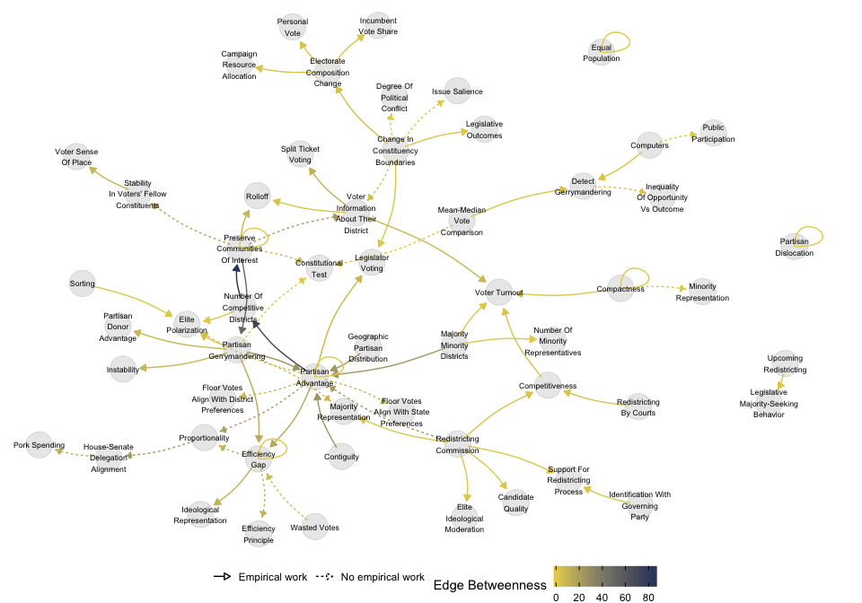
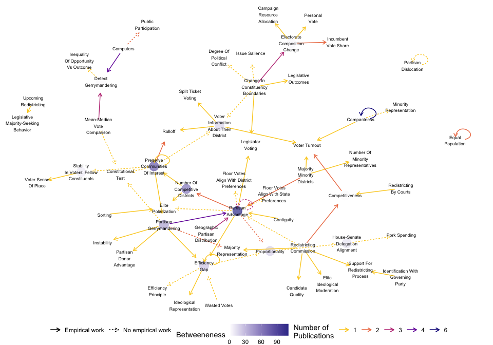
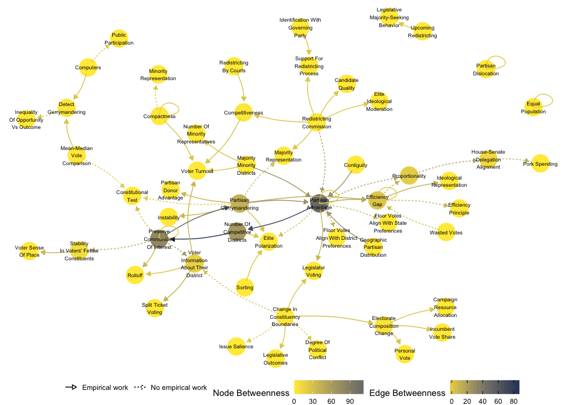
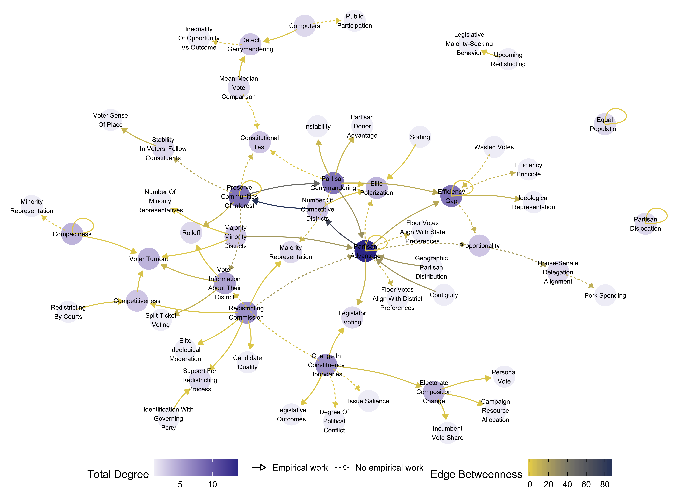

netlit Vignette
Redistricting Literature
Devin Judge-Lord, Adeline Lo & Kyler Hudson
Source:vignettes/netlit.Rmd
netlit.RmdUnderstanding the gaps and connections across existing theories and findings is a perennial challenge in scientific research. Systematically reviewing scholarship is especially challenging for researchers who may lack domain expertise, including junior scholars or those exploring new substantive territory. Conversely, senior scholars may rely on longstanding assumptions and social networks that exclude new research. In both cases, ad hoc literature reviews hinder accumulation of knowledge. Scholars are rarely systematic in selecting relevant prior work or then identifying patterns across their sample. To encourage systematic, replicable, and transparent methods for assessing literature, we propose an accessible network-based framework for reviewing scholarship. In our method, we consider a literature as a network of recurring concepts (nodes) and theorized relationships among them (edges). Network statistics and visualization allow researchers to see patterns and offer reproducible characterizations of assertions about the major themes in existing literature.
netlit provides functions to generate network statistics
from a literature review. Specifically, it processes a dataset where
each row is a proposed relationship (“edge”) between two concepts or
variables (“nodes”). The aim is to offer easy tools to begin using the
power of network analysis in R for literature reviews. Using
netlit simply requires researchers to enter relationships
they observe in prior studies into a simple spreadsheet.
Using the netlit R Package
The netlit package provides functions to generate
network statistics from a literature review. Specifically,
netlit provides a wrapper for igraph functions
to facilitate using network analysis in literature reviews.
Install this package with
devtools::install_github("judgelord/netlit")To install netlit from CRAN, run the following:
install.packages("netlit")Basic Usage
The review() function takes in a dataframe,
data, that includes from and to
columns (a directed graph structure).
In the example below, we use example data from this project on
redistricting. These data are a set of related concepts
(from and to) in the redistricting literature
and citations for these relationships (cites and
cites_empirical). See vignette("netlit") for
more details on this example.
| from | to | cites | cites_empirical |
|---|---|---|---|
| computers | detect gerrymandering | Altman & McDonald 2010; Wang 2016; Altman & McDonald 2011; Ramachandran & Gold 2018 | Wang 2016 |
| computers | public participation | Altman & McDonald 2010; Altman & McDonald 2011 | NA |
| number of competitive districts | preserve communities of interest | Gimpel & Harbridge-Yong 2020 | Gimpel & Harbridge-Yong 2020 |
| partisan advantage | proportionality | Caughey et al. 2017; Tamas 2019 | NA |
| partisan gerrymandering | efficiency gap | Chen 2017 | Chen 2017 |
| preserve communities of interest | constitutional test | Stephanopoulos 2012 | NA |
| mean-median vote comparison | detect gerrymandering | McDonald & Best 2015; Wang 2016; Wang 2016b | Wang 2016b |
| mean-median vote comparison | constitutional test | McDonald & Best 2015, Best et al. 2018 | NA |
| partisan gerrymandering | constitutional test | Kang 2017 | NA |
| partisan gerrymandering | instability | Yoshinaka & Murhpy 2011 | Yoshinaka & Murhpy 2011 |
| partisan gerrymandering | elite polarization | Masket et al. 2012 | Masket et al. 2012 |
| majority minority districts | number of minority representatives | Atsusaka 2021 | Atsusaka 2021 |
| majority minority districts | partisan advantage | Cox & Holden 2011; Sabouni & Shelton 2021 | Sabouni & Shelton 2021 |
| majority minority districts | voter turnout | Fraga 2016 | Fraga 2016 |
| redistricting commission | partisan advantage | Cain 2011 | NA |
| partisan gerrymandering | partisan donor advantage | Kirkland 2013 | Kirkland 2013 |
| change in constituency boundaries | legislator voting | Bertelli & Carson 2011, Hayes et al. 2010 | Bertelli & Carson 2011, Hayes et al. 2010 |
| change in constituency boundaries | legislative outcomes | Bertelli & Carson 2011, Gul & Pesendorfer 2010 | Bertelli & Carson 2011 |
| competitiveness | voter turnout | Moskowitz & Schneer 2019; Hunt 2018 | Moskowitz & Schneer 2019; Hunt 2018 |
| sorting | elite polarization | Krasa & Polborn 2018 | Krasa & Polborn 2018 |
| contiguity | partisan advantage | Chen & Rodden 2013 | Chen & Rodden 2013 |
| electorate composition change | incumbent vote share | Hood & McKee 2013; Ansolabehere & Snyder 2012 | Hood & McKee 2013; Ansolabehere & Snyder 2012 |
| electorate composition change | personal vote | Carsey et al. 2017, Bertelli & Carson 2011 | Carsey et al. 2017 |
| house-senate delegation alignment | pork spending | Chen 2010 | NA |
| stability in voters’ fellow constituents | voter sense of place | Hayes & McKee 2011 | Hayes & McKee 2011 |
| change in constituency boundaries | voter information about their district | Winburn & Wagner 2010 | NA |
| voter information about their district | rolloff | Winburn & Wagner 2010 | Winburn & Wagner 2010 |
| voter information about their district | voter turnout | Winburn & Wagner 2010 | Winburn & Wagner 2010 |
| voter information about their district | split ticket voting | Winburn & Wagner 2010 | Winburn & Wagner 2010 |
| electorate composition change | campaign resource allocation | Limbocker & You 2020 | Limbocker & You 2020 |
| geographic partisan distribution | partisan advantage | Chen & Rodden 2013; Duchin et al. 2019; Powell et al. 2020 | Chen & Rodden 2013; Duchin et al. 2019; Powell et al. 2020 |
| preserve communities of interest | stability in voters’ fellow constituents | Winburn & Wagner 2010 | NA |
| preserve communities of interest | voter information about their district | Winburn & Wagner 2010 | NA |
| preserve communities of interest | rolloff | Hayes & McKee 2011; Winburn & Wagner 2010 | Hayes & McKee 2011 |
| number of competitive districts | elite polarization | Grainger 2010 | Grainger 2010 |
| partisan advantage | floor votes align with district preferences | Caughey et al. 2017 | NA |
| partisan advantage | floor votes align with state preferences | Caughey et al. 2017 | NA |
| partisan advantage | partisan advantage | Arrington 2016; Campisi et al. 2019; Katz, King & Rosenblatt 2020 | NA |
| partisan advantage | legislator voting | Lo 2013 | Lo 2013 |
| partisan advantage | elite polarization | Lo 2013 | NA |
| partisan advantage | efficiency gap | Chen & Cottrell 2016 | Chen & Cottrell 2016 |
| partisan advantage | number of competitive districts | Goedert 2017; Goedert 2014 | Goedert 2017, Yoshinaka & Murhpy 2011; Goedert 2014 |
| proportionality | house-senate delegation alignment | Chen 2010 | NA |
| compactness | minority representation | Webster 2013 | NA |
| compactness | compactness | Barnes & Solomon 2020; Gatesman & Unwin 2021; Magleby & Mosesson 2018; De Assis et al. 2014; Altman & McDonald 2011; Liu et al. 2016, Chen & Rodden 2015, Tam Cho & Liu 2016, Saxon 2020 | Barnes & Solomon 2020; Magleby & Mosesson 2018; De Assis et al. 2014; Chen & Rodden 2015, Tam Cho & Liu 2016, Saxon 2020 |
| efficiency gap | efficiency gap | Stephanopoulos & McGhee 2015, McGhee 2014 | McGhee 2014 |
| equal population | equal population | Gatesman & Unwin 2021; Magleby & Mosesson 2018 | Magleby & Mosesson 2018 |
| redistricting commission | majority representation | Matsusaka 2010 | Matsusaka 2010 |
| redistricting commission | elite ideological moderation | McGhee & Shor 2017 | McGhee & Shor 2017 |
| redistricting commission | competitiveness | Carson et al. 2014, Grainger 2010, Masket et al. 2012; Goedert 2014 | Carson et al. 2014, Grainger 2010, Masket et al. 2012; Goedert 2014 |
| redistricting by courts | competitiveness | Carson et al. 2014 | Carson et al. 2014 |
| upcoming redistricting | legislative majority-seeking behavior | Makse 2014 | Makse 2014 |
| partisan dislocation | partisan dislocation | Deford, Eubank & Rodden 2020 | NA |
| compactness | voter turnout | Ladewig 2018 | Ladewig 2018 |
| preserve communities of interest | preserve communities of interest | Makse 2012 | Makse 2012 |
| partisan gerrymandering | partisan advantage | Wang 2016; Cox & Holden 2011; Sabouni & Shelton 2021; Powell et al. 2020 | Cox & Holden 2011; Sabouni & Shelton 2021; Powell et al. 2020 |
| preserve communities of interest | partisan gerrymandering | Sabouni & Shelton 2021 | Sabouni & Shelton 2021 |
| redistricting commission | candidate quality | Williamson 2019 | Williamson 2019 |
| efficiency gap | efficiency principle | Veomett 2018 | NA |
| wasted votes | efficiency gap | McGhee 2017 | NA |
| efficiency gap | ideological representation | Caughey et al. 2017b | Caughey et al. 2017b |
| identification with governing party | support for redistricting process | Fougere et al. 2010 | Fougere et al. 2010 |
| redistricting commission | support for redistricting process | Fougere et al. 2010 | Fougere et al. 2010 |
| efficiency gap | proportionality | Warrington 2018 | NA |
| change in constituency boundaries | issue salience | Gardner 2012 | NA |
| change in constituency boundaries | degree of political conflict | Gardner 2012 | NA |
| partisan gerrymandering | majority representation | Goedert 2014; Nagle 2019 | NA |
| detect gerrymandering | inequality of opportunity vs outcome | Wang et al. 2018 | NA |
| change in constituency boundaries | electorate composition change | Bertelli & Carson 2011; Hood & McKee 2013; Ansolabehere & Snyder 2012 | Bertelli & Carson 2011; Hood & McKee 2013; Ansolabehere & Snyder 2012 |
netlit offers four main functions:
make_edgelist(), make_nodelist(),
augment_nodelist(), and review().
review() is the primary function. The others are helper
functions that perform the individual steps that review()
does all at once. review() takes in a dataframe with at
least two columns representing linked concepts (e.g., a cause and an
effect) and returns data augmented with network statistics. Users must
either specify “from” nodes and “to” nodes with the from
and to arguments or include columns named from
and to in the supplied data object.
review() returns a list of three objects:
- an augmented
edgelist(a list of relationships withedge_betweennesscalculated), - an augmented
nodelist(a list of concepts withdegreeandbetweennesscalculated), and - a
graphobject suitable for use in otherigraphfunctions or other network visualization packages.
Users may wish to include edge attributes (e.g., information about
the relationship between the two concepts) or node attributes
(information about each concept). We show how to do so below. But first,
consider the basic use of review():
lit <- review(literature, from = "from", to = "to")
lit## A netlit_review object with the following components:
##
## $edgelist
## - 69 edges
## - edge attributes: edge_betweenness
## $nodelist
## - 56 nodes
## - node attributes: degree_in, degree_out, degree_total, betweenness
## $graph
## an igraph object
edges <- lit$edgelist
edges %>% kable()| from | to | edge_betweenness |
|---|---|---|
| computers | detect gerrymandering | 2.0 |
| computers | public participation | 1.0 |
| number of competitive districts | preserve communities of interest | 86.0 |
| partisan advantage | proportionality | 19.5 |
| partisan gerrymandering | efficiency gap | 13.5 |
| preserve communities of interest | constitutional test | 7.0 |
| mean-median vote comparison | detect gerrymandering | 2.0 |
| mean-median vote comparison | constitutional test | 1.0 |
| partisan gerrymandering | constitutional test | 1.0 |
| partisan gerrymandering | instability | 8.0 |
| partisan gerrymandering | elite polarization | 2.0 |
| majority minority districts | number of minority representatives | 1.0 |
| majority minority districts | partisan advantage | 23.0 |
| majority minority districts | voter turnout | 1.0 |
| redistricting commission | partisan advantage | 22.0 |
| partisan gerrymandering | partisan donor advantage | 8.0 |
| change in constituency boundaries | legislator voting | 1.0 |
| change in constituency boundaries | legislative outcomes | 1.0 |
| competitiveness | voter turnout | 3.0 |
| sorting | elite polarization | 1.0 |
| contiguity | partisan advantage | 24.0 |
| electorate composition change | incumbent vote share | 2.0 |
| electorate composition change | personal vote | 2.0 |
| house-senate delegation alignment | pork spending | 12.0 |
| stability in voters’ fellow constituents | voter sense of place | 9.0 |
| change in constituency boundaries | voter information about their district | 4.0 |
| voter information about their district | rolloff | 2.0 |
| voter information about their district | voter turnout | 8.0 |
| voter information about their district | split ticket voting | 10.0 |
| electorate composition change | campaign resource allocation | 2.0 |
| geographic partisan distribution | partisan advantage | 24.0 |
| preserve communities of interest | stability in voters’ fellow constituents | 16.0 |
| preserve communities of interest | voter information about their district | 22.0 |
| preserve communities of interest | rolloff | 8.0 |
| number of competitive districts | elite polarization | 1.0 |
| partisan advantage | floor votes align with district preferences | 8.0 |
| partisan advantage | floor votes align with state preferences | 8.0 |
| partisan advantage | partisan advantage | 0.0 |
| partisan advantage | legislator voting | 8.0 |
| partisan advantage | elite polarization | 5.0 |
| partisan advantage | efficiency gap | 15.0 |
| partisan advantage | number of competitive districts | 71.0 |
| proportionality | house-senate delegation alignment | 22.0 |
| compactness | minority representation | 1.0 |
| compactness | compactness | 0.0 |
| efficiency gap | efficiency gap | 0.0 |
| equal population | equal population | 0.0 |
| redistricting commission | majority representation | 1.0 |
| redistricting commission | elite ideological moderation | 1.0 |
| redistricting commission | competitiveness | 2.0 |
| redistricting by courts | competitiveness | 2.0 |
| upcoming redistricting | legislative majority-seeking behavior | 1.0 |
| partisan dislocation | partisan dislocation | 0.0 |
| compactness | voter turnout | 1.0 |
| preserve communities of interest | preserve communities of interest | 0.0 |
| partisan gerrymandering | partisan advantage | 25.5 |
| preserve communities of interest | partisan gerrymandering | 49.0 |
| redistricting commission | candidate quality | 1.0 |
| efficiency gap | efficiency principle | 10.0 |
| wasted votes | efficiency gap | 6.0 |
| efficiency gap | ideological representation | 10.0 |
| identification with governing party | support for redistricting process | 1.0 |
| redistricting commission | support for redistricting process | 1.0 |
| efficiency gap | proportionality | 10.5 |
| change in constituency boundaries | issue salience | 1.0 |
| change in constituency boundaries | degree of political conflict | 1.0 |
| partisan gerrymandering | majority representation | 7.0 |
| detect gerrymandering | inequality of opportunity vs outcome | 3.0 |
| change in constituency boundaries | electorate composition change | 4.0 |
nodes <- lit$nodelist
nodes %>% kable()| node | degree_in | degree_out | degree_total | betweenness |
|---|---|---|---|---|
| computers | 0 | 2 | 2 | 0.0 |
| number of competitive districts | 1 | 2 | 3 | 64.0 |
| partisan advantage | 6 | 8 | 14 | 111.5 |
| partisan gerrymandering | 1 | 7 | 8 | 42.0 |
| preserve communities of interest | 2 | 6 | 8 | 79.0 |
| mean-median vote comparison | 0 | 2 | 2 | 0.0 |
| majority minority districts | 0 | 3 | 3 | 0.0 |
| redistricting commission | 0 | 6 | 6 | 0.0 |
| change in constituency boundaries | 0 | 6 | 6 | 0.0 |
| competitiveness | 2 | 1 | 3 | 2.0 |
| sorting | 0 | 1 | 1 | 0.0 |
| contiguity | 0 | 1 | 1 | 0.0 |
| electorate composition change | 1 | 3 | 4 | 3.0 |
| house-senate delegation alignment | 1 | 1 | 2 | 11.0 |
| stability in voters’ fellow constituents | 1 | 1 | 2 | 8.0 |
| voter information about their district | 2 | 3 | 5 | 17.0 |
| geographic partisan distribution | 0 | 1 | 1 | 0.0 |
| proportionality | 2 | 1 | 3 | 20.0 |
| compactness | 1 | 3 | 4 | 0.0 |
| efficiency gap | 4 | 4 | 8 | 25.5 |
| equal population | 1 | 1 | 2 | 0.0 |
| redistricting by courts | 0 | 1 | 1 | 0.0 |
| upcoming redistricting | 0 | 1 | 1 | 0.0 |
| partisan dislocation | 1 | 1 | 2 | 0.0 |
| wasted votes | 0 | 1 | 1 | 0.0 |
| identification with governing party | 0 | 1 | 1 | 0.0 |
| detect gerrymandering | 2 | 1 | 3 | 2.0 |
| public participation | 1 | 0 | 1 | 0.0 |
| constitutional test | 3 | 0 | 3 | 0.0 |
| instability | 1 | 0 | 1 | 0.0 |
| elite polarization | 4 | 0 | 4 | 0.0 |
| number of minority representatives | 1 | 0 | 1 | 0.0 |
| voter turnout | 4 | 0 | 4 | 0.0 |
| partisan donor advantage | 1 | 0 | 1 | 0.0 |
| legislator voting | 2 | 0 | 2 | 0.0 |
| legislative outcomes | 1 | 0 | 1 | 0.0 |
| incumbent vote share | 1 | 0 | 1 | 0.0 |
| personal vote | 1 | 0 | 1 | 0.0 |
| pork spending | 1 | 0 | 1 | 0.0 |
| voter sense of place | 1 | 0 | 1 | 0.0 |
| rolloff | 2 | 0 | 2 | 0.0 |
| split ticket voting | 1 | 0 | 1 | 0.0 |
| campaign resource allocation | 1 | 0 | 1 | 0.0 |
| floor votes align with district preferences | 1 | 0 | 1 | 0.0 |
| floor votes align with state preferences | 1 | 0 | 1 | 0.0 |
| minority representation | 1 | 0 | 1 | 0.0 |
| majority representation | 2 | 0 | 2 | 0.0 |
| elite ideological moderation | 1 | 0 | 1 | 0.0 |
| legislative majority-seeking behavior | 1 | 0 | 1 | 0.0 |
| candidate quality | 1 | 0 | 1 | 0.0 |
| efficiency principle | 1 | 0 | 1 | 0.0 |
| ideological representation | 1 | 0 | 1 | 0.0 |
| support for redistricting process | 2 | 0 | 2 | 0.0 |
| issue salience | 1 | 0 | 1 | 0.0 |
| degree of political conflict | 1 | 0 | 1 | 0.0 |
| inequality of opportunity vs outcome | 1 | 0 | 1 | 0.0 |
Edge and node attributes can be added using the
edge_attributes and node_attributes arguments.
edge_attributes is a vector that identifies columns in the
supplied data frame that the user would like to retain.
node_attributes is a separate dataframe that contains
attributes for each node in the primary data set. The example
node_attributes data include one column type
indicating a type for each each node/variable/concept.
data("node_attributes")
node_attributes %>% kable()| node | type |
|---|---|
| campaign resource allocation | effect |
| candidate quality | effect |
| change in constituency boundaries | condition |
| preserve communities of interest | goal |
| competitiveness | goal |
| computers | condition |
| constitutional test | metric |
| contiguity | condition |
| sorting | condition |
| detect gerrymandering | goal |
| electorate composition change | condition |
| elite ideological moderation | effect |
| equal population | metric |
| floor votes align with district preferences | effect |
| house-senate delegation alignment | effect |
| incumbent vote share | effect |
| instability | effect |
| legislative majority-seeking behavior | effect |
| legislative outcomes | effect |
| legislator voting | effect |
| majority minority districts | policy |
| mean-median vote comparison | metric |
| minority representation | effect |
| number of competitive districts | goal |
| number of minority representatives | effect |
| partisan advantage | goal |
| partisan gerrymandering | condition |
| personal vote | effect |
| pork spending | policy |
| proportionality | goal |
| public participation | goal |
| redistricting by courts | policy |
| redistricting commission | policy |
| rolloff | effect |
| split ticket voting | effect |
| stability in voters’ fellow constituents | effect |
| upcoming redistricting | condition |
| voter information about their district | effect |
| voter sense of place | effect |
| voter turnout | effect |
| elite polarization | effect |
| geographic partisan distribution | condition |
| compactness | value |
| efficiency gap | metric |
| partisan dislocation | metric |
| wasted votes | metric |
| identification with governing party | condition |
| partisan donor advantage | effect |
| floor votes align with state preferences | effect |
| majority representation | effect |
| efficiency principle | metric |
| ideological representation | effect |
| support for redistricting process | effect |
| issue salience | effect |
| degree of political conflict | effect |
| inequality of opportunity vs outcome | effect |
lit <- review(literature,
edge_attributes = c("cites", "cites_empirical"),
node_attributes = node_attributes)
lit## A netlit_review object with the following components:
##
## $edgelist
## - 69 edges
## - edge attributes: cites, cites_empirical, edge_betweenness
## $nodelist
## - 56 nodes
## - node attributes: type, degree_in, degree_out, degree_total, betweenness
## $graph
## an igraph objectTip: to retain all variables from literature, use
edge_attributes = names(literature).
More Advanced Uses: larger networks, visualizing your network, network descriptives
We separated multiple cites to a theorized relationship with semicolons. Let’s count the total number of citations and the number of citations to empirical work by splitting out each cite and measuring the length of that vector.
# count cites
literature %<>%
group_by(to, from) %>%
mutate(cite_weight = str_split(cites, ";")[[1]] %>% length(),
cite_weight_empirical = str_split(cites_empirical, ";",)[[1]] %>% length(),
cite_weight_empirical = ifelse(is.na(cites_empirical), 0, cite_weight_empirical)) %>%
ungroup()
# subsets
literature %<>% mutate(communities_node = str_c(to, from) %>% str_detect("Commun"),
confound = case_when(
from == "Preserve\nCommunities\nOf Interest" & to == "Rolloff" ~ T,
from == "Voter\nInformation\nAbout Their\nDistrict" & to == "Rolloff" ~ T,
from == "Preserve\nCommunities\nOf Interest"
& to == "Voter\nInformation\nAbout Their\nDistrict" ~ T,
T ~ F),
empirical = ifelse(!is.na(cites_empirical),
"Empirical work",
"No empirical work"))Now we use review() on this expanded edgelist, including
all variables in the literature data with
edge_attributes = names(literature).
# now with all node and edge attributes
lit <- review(literature,
edge_attributes = names(literature),
node_attributes = node_attributes
)
edges <- lit$edgelist
edges %>% kable()| from | to | cites | cites_empirical | cite_weight | cite_weight_empirical | communities_node | confound | empirical | edge_betweenness |
|---|---|---|---|---|---|---|---|---|---|
| Computers | Detect Gerrymandering | Altman & McDonald 2010; Wang 2016; Altman & McDonald 2011; Ramachandran & Gold 2018 | Wang 2016 | 4 | 1 | FALSE | FALSE | Empirical work | 2.0 |
| Computers | Public Participation | Altman & McDonald 2010; Altman & McDonald 2011 | NA | 2 | 0 | FALSE | FALSE | No empirical work | 1.0 |
| Number Of Competitive Districts | Preserve Communities Of Interest | Gimpel & Harbridge-Yong 2020 | Gimpel & Harbridge-Yong 2020 | 1 | 1 | TRUE | FALSE | Empirical work | 86.0 |
| Partisan Advantage | Proportionality | Caughey et al. 2017; Tamas 2019 | NA | 2 | 0 | FALSE | FALSE | No empirical work | 19.5 |
| Partisan Gerrymandering | Efficiency Gap | Chen 2017 | Chen 2017 | 1 | 1 | FALSE | FALSE | Empirical work | 13.5 |
| Preserve Communities Of Interest | Constitutional Test | Stephanopoulos 2012 | NA | 1 | 0 | TRUE | FALSE | No empirical work | 7.0 |
| Mean-Median Vote Comparison | Detect Gerrymandering | McDonald & Best 2015; Wang 2016; Wang 2016b | Wang 2016b | 3 | 1 | FALSE | FALSE | Empirical work | 2.0 |
| Mean-Median Vote Comparison | Constitutional Test | McDonald & Best 2015, Best et al. 2018 | NA | 1 | 0 | FALSE | FALSE | No empirical work | 1.0 |
| Partisan Gerrymandering | Constitutional Test | Kang 2017 | NA | 1 | 0 | FALSE | FALSE | No empirical work | 1.0 |
| Partisan Gerrymandering | Instability | Yoshinaka & Murhpy 2011 | Yoshinaka & Murhpy 2011 | 1 | 1 | FALSE | FALSE | Empirical work | 8.0 |
| Partisan Gerrymandering | Elite Polarization | Masket et al. 2012 | Masket et al. 2012 | 1 | 1 | FALSE | FALSE | Empirical work | 2.0 |
| Majority Minority Districts | Number Of Minority Representatives | Atsusaka 2021 | Atsusaka 2021 | 1 | 1 | FALSE | FALSE | Empirical work | 1.0 |
| Majority Minority Districts | Partisan Advantage | Cox & Holden 2011; Sabouni & Shelton 2021 | Sabouni & Shelton 2021 | 2 | 1 | FALSE | FALSE | Empirical work | 23.0 |
| Majority Minority Districts | Voter Turnout | Fraga 2016 | Fraga 2016 | 1 | 1 | FALSE | FALSE | Empirical work | 1.0 |
| Redistricting Commission | Partisan Advantage | Cain 2011 | NA | 1 | 0 | FALSE | FALSE | No empirical work | 22.0 |
| Partisan Gerrymandering | Partisan Donor Advantage | Kirkland 2013 | Kirkland 2013 | 1 | 1 | FALSE | FALSE | Empirical work | 8.0 |
| Change In Constituency Boundaries | Legislator Voting | Bertelli & Carson 2011, Hayes et al. 2010 | Bertelli & Carson 2011, Hayes et al. 2010 | 1 | 1 | FALSE | FALSE | Empirical work | 1.0 |
| Change In Constituency Boundaries | Legislative Outcomes | Bertelli & Carson 2011, Gul & Pesendorfer 2010 | Bertelli & Carson 2011 | 1 | 1 | FALSE | FALSE | Empirical work | 1.0 |
| Competitiveness | Voter Turnout | Moskowitz & Schneer 2019; Hunt 2018 | Moskowitz & Schneer 2019; Hunt 2018 | 2 | 2 | FALSE | FALSE | Empirical work | 3.0 |
| Sorting | Elite Polarization | Krasa & Polborn 2018 | Krasa & Polborn 2018 | 1 | 1 | FALSE | FALSE | Empirical work | 1.0 |
| Contiguity | Partisan Advantage | Chen & Rodden 2013 | Chen & Rodden 2013 | 1 | 1 | FALSE | FALSE | Empirical work | 24.0 |
| Electorate Composition Change | Incumbent Vote Share | Hood & McKee 2013; Ansolabehere & Snyder 2012 | Hood & McKee 2013; Ansolabehere & Snyder 2012 | 2 | 2 | FALSE | FALSE | Empirical work | 2.0 |
| Electorate Composition Change | Personal Vote | Carsey et al. 2017, Bertelli & Carson 2011 | Carsey et al. 2017 | 1 | 1 | FALSE | FALSE | Empirical work | 2.0 |
| House-Senate Delegation Alignment | Pork Spending | Chen 2010 | NA | 1 | 0 | FALSE | FALSE | No empirical work | 12.0 |
| Stability In Voters’ Fellow Constituents | Voter Sense Of Place | Hayes & McKee 2011 | Hayes & McKee 2011 | 1 | 1 | FALSE | FALSE | Empirical work | 9.0 |
| Change In Constituency Boundaries | Voter Information About Their District | Winburn & Wagner 2010 | NA | 1 | 0 | FALSE | FALSE | No empirical work | 4.0 |
| Voter Information About Their District | Rolloff | Winburn & Wagner 2010 | Winburn & Wagner 2010 | 1 | 1 | FALSE | TRUE | Empirical work | 2.0 |
| Voter Information About Their District | Voter Turnout | Winburn & Wagner 2010 | Winburn & Wagner 2010 | 1 | 1 | FALSE | FALSE | Empirical work | 8.0 |
| Voter Information About Their District | Split Ticket Voting | Winburn & Wagner 2010 | Winburn & Wagner 2010 | 1 | 1 | FALSE | FALSE | Empirical work | 10.0 |
| Electorate Composition Change | Campaign Resource Allocation | Limbocker & You 2020 | Limbocker & You 2020 | 1 | 1 | FALSE | FALSE | Empirical work | 2.0 |
| Geographic Partisan Distribution | Partisan Advantage | Chen & Rodden 2013; Duchin et al. 2019; Powell et al. 2020 | Chen & Rodden 2013; Duchin et al. 2019; Powell et al. 2020 | 3 | 3 | FALSE | FALSE | Empirical work | 24.0 |
| Preserve Communities Of Interest | Stability In Voters’ Fellow Constituents | Winburn & Wagner 2010 | NA | 1 | 0 | TRUE | FALSE | No empirical work | 16.0 |
| Preserve Communities Of Interest | Voter Information About Their District | Winburn & Wagner 2010 | NA | 1 | 0 | TRUE | TRUE | No empirical work | 22.0 |
| Preserve Communities Of Interest | Rolloff | Hayes & McKee 2011; Winburn & Wagner 2010 | Hayes & McKee 2011 | 2 | 1 | TRUE | TRUE | Empirical work | 8.0 |
| Number Of Competitive Districts | Elite Polarization | Grainger 2010 | Grainger 2010 | 1 | 1 | FALSE | FALSE | Empirical work | 1.0 |
| Partisan Advantage | Floor Votes Align With District Preferences | Caughey et al. 2017 | NA | 1 | 0 | FALSE | FALSE | No empirical work | 8.0 |
| Partisan Advantage | Floor Votes Align With State Preferences | Caughey et al. 2017 | NA | 1 | 0 | FALSE | FALSE | No empirical work | 8.0 |
| Partisan Advantage | Partisan Advantage | Arrington 2016; Campisi et al. 2019; Katz, King & Rosenblatt 2020 | NA | 3 | 0 | FALSE | FALSE | No empirical work | 0.0 |
| Partisan Advantage | Legislator Voting | Lo 2013 | Lo 2013 | 1 | 1 | FALSE | FALSE | Empirical work | 8.0 |
| Partisan Advantage | Elite Polarization | Lo 2013 | NA | 1 | 0 | FALSE | FALSE | No empirical work | 5.0 |
| Partisan Advantage | Efficiency Gap | Chen & Cottrell 2016 | Chen & Cottrell 2016 | 1 | 1 | FALSE | FALSE | Empirical work | 15.0 |
| Partisan Advantage | Number Of Competitive Districts | Goedert 2017; Goedert 2014 | Goedert 2017, Yoshinaka & Murhpy 2011; Goedert 2014 | 2 | 2 | FALSE | FALSE | Empirical work | 71.0 |
| Proportionality | House-Senate Delegation Alignment | Chen 2010 | NA | 1 | 0 | FALSE | FALSE | No empirical work | 22.0 |
| Compactness | Minority Representation | Webster 2013 | NA | 1 | 0 | FALSE | FALSE | No empirical work | 1.0 |
| Compactness | Compactness | Barnes & Solomon 2020; Gatesman & Unwin 2021; Magleby & Mosesson 2018; De Assis et al. 2014; Altman & McDonald 2011; Liu et al. 2016, Chen & Rodden 2015, Tam Cho & Liu 2016, Saxon 2020 | Barnes & Solomon 2020; Magleby & Mosesson 2018; De Assis et al. 2014; Chen & Rodden 2015, Tam Cho & Liu 2016, Saxon 2020 | 6 | 4 | FALSE | FALSE | Empirical work | 0.0 |
| Efficiency Gap | Efficiency Gap | Stephanopoulos & McGhee 2015, McGhee 2014 | McGhee 2014 | 1 | 1 | FALSE | FALSE | Empirical work | 0.0 |
| Equal Population | Equal Population | Gatesman & Unwin 2021; Magleby & Mosesson 2018 | Magleby & Mosesson 2018 | 2 | 1 | FALSE | FALSE | Empirical work | 0.0 |
| Redistricting Commission | Majority Representation | Matsusaka 2010 | Matsusaka 2010 | 1 | 1 | FALSE | FALSE | Empirical work | 1.0 |
| Redistricting Commission | Elite Ideological Moderation | McGhee & Shor 2017 | McGhee & Shor 2017 | 1 | 1 | FALSE | FALSE | Empirical work | 1.0 |
| Redistricting Commission | Competitiveness | Carson et al. 2014, Grainger 2010, Masket et al. 2012; Goedert 2014 | Carson et al. 2014, Grainger 2010, Masket et al. 2012; Goedert 2014 | 2 | 2 | FALSE | FALSE | Empirical work | 2.0 |
| Redistricting By Courts | Competitiveness | Carson et al. 2014 | Carson et al. 2014 | 1 | 1 | FALSE | FALSE | Empirical work | 2.0 |
| Upcoming Redistricting | Legislative Majority-Seeking Behavior | Makse 2014 | Makse 2014 | 1 | 1 | FALSE | FALSE | Empirical work | 1.0 |
| Partisan Dislocation | Partisan Dislocation | Deford, Eubank & Rodden 2020 | NA | 1 | 0 | FALSE | FALSE | No empirical work | 0.0 |
| Compactness | Voter Turnout | Ladewig 2018 | Ladewig 2018 | 1 | 1 | FALSE | FALSE | Empirical work | 1.0 |
| Preserve Communities Of Interest | Preserve Communities Of Interest | Makse 2012 | Makse 2012 | 1 | 1 | TRUE | FALSE | Empirical work | 0.0 |
| Partisan Gerrymandering | Partisan Advantage | Wang 2016; Cox & Holden 2011; Sabouni & Shelton 2021; Powell et al. 2020 | Cox & Holden 2011; Sabouni & Shelton 2021; Powell et al. 2020 | 4 | 3 | FALSE | FALSE | Empirical work | 25.5 |
| Preserve Communities Of Interest | Partisan Gerrymandering | Sabouni & Shelton 2021 | Sabouni & Shelton 2021 | 1 | 1 | TRUE | FALSE | Empirical work | 49.0 |
| Redistricting Commission | Candidate Quality | Williamson 2019 | Williamson 2019 | 1 | 1 | FALSE | FALSE | Empirical work | 1.0 |
| Efficiency Gap | Efficiency Principle | Veomett 2018 | NA | 1 | 0 | FALSE | FALSE | No empirical work | 10.0 |
| Wasted Votes | Efficiency Gap | McGhee 2017 | NA | 1 | 0 | FALSE | FALSE | No empirical work | 6.0 |
| Efficiency Gap | Ideological Representation | Caughey et al. 2017b | Caughey et al. 2017b | 1 | 1 | FALSE | FALSE | Empirical work | 10.0 |
| Identification With Governing Party | Support For Redistricting Process | Fougere et al. 2010 | Fougere et al. 2010 | 1 | 1 | FALSE | FALSE | Empirical work | 1.0 |
| Redistricting Commission | Support For Redistricting Process | Fougere et al. 2010 | Fougere et al. 2010 | 1 | 1 | FALSE | FALSE | Empirical work | 1.0 |
| Efficiency Gap | Proportionality | Warrington 2018 | NA | 1 | 0 | FALSE | FALSE | No empirical work | 10.5 |
| Change In Constituency Boundaries | Issue Salience | Gardner 2012 | NA | 1 | 0 | FALSE | FALSE | No empirical work | 1.0 |
| Change In Constituency Boundaries | Degree Of Political Conflict | Gardner 2012 | NA | 1 | 0 | FALSE | FALSE | No empirical work | 1.0 |
| Partisan Gerrymandering | Majority Representation | Goedert 2014; Nagle 2019 | NA | 2 | 0 | FALSE | FALSE | No empirical work | 7.0 |
| Detect Gerrymandering | Inequality Of Opportunity Vs Outcome | Wang et al. 2018 | NA | 1 | 0 | FALSE | FALSE | No empirical work | 3.0 |
| Change In Constituency Boundaries | Electorate Composition Change | Bertelli & Carson 2011; Hood & McKee 2013; Ansolabehere & Snyder 2012 | Bertelli & Carson 2011; Hood & McKee 2013; Ansolabehere & Snyder 2012 | 3 | 3 | FALSE | FALSE | Empirical work | 4.0 |
nodes <- lit$nodelist
nodes %>% kable()| node | type | degree_in | degree_out | degree_total | betweenness |
|---|---|---|---|---|---|
| Computers | condition | 0 | 2 | 2 | 0.0 |
| Number Of Competitive Districts | goal | 1 | 2 | 3 | 64.0 |
| Partisan Advantage | goal | 6 | 8 | 14 | 111.5 |
| Partisan Gerrymandering | condition | 1 | 7 | 8 | 42.0 |
| Preserve Communities Of Interest | goal | 2 | 6 | 8 | 79.0 |
| Mean-Median Vote Comparison | metric | 0 | 2 | 2 | 0.0 |
| Majority Minority Districts | policy | 0 | 3 | 3 | 0.0 |
| Redistricting Commission | policy | 0 | 6 | 6 | 0.0 |
| Change In Constituency Boundaries | condition | 0 | 6 | 6 | 0.0 |
| Competitiveness | goal | 2 | 1 | 3 | 2.0 |
| Sorting | condition | 0 | 1 | 1 | 0.0 |
| Contiguity | condition | 0 | 1 | 1 | 0.0 |
| Electorate Composition Change | condition | 1 | 3 | 4 | 3.0 |
| House-Senate Delegation Alignment | effect | 1 | 1 | 2 | 11.0 |
| Stability In Voters’ Fellow Constituents | effect | 1 | 1 | 2 | 8.0 |
| Voter Information About Their District | effect | 2 | 3 | 5 | 17.0 |
| Geographic Partisan Distribution | condition | 0 | 1 | 1 | 0.0 |
| Proportionality | goal | 2 | 1 | 3 | 20.0 |
| Compactness | value | 1 | 3 | 4 | 0.0 |
| Efficiency Gap | metric | 4 | 4 | 8 | 25.5 |
| Equal Population | metric | 1 | 1 | 2 | 0.0 |
| Redistricting By Courts | policy | 0 | 1 | 1 | 0.0 |
| Upcoming Redistricting | condition | 0 | 1 | 1 | 0.0 |
| Partisan Dislocation | metric | 1 | 1 | 2 | 0.0 |
| Wasted Votes | metric | 0 | 1 | 1 | 0.0 |
| Identification With Governing Party | condition | 0 | 1 | 1 | 0.0 |
| Detect Gerrymandering | goal | 2 | 1 | 3 | 2.0 |
| Public Participation | goal | 1 | 0 | 1 | 0.0 |
| Constitutional Test | metric | 3 | 0 | 3 | 0.0 |
| Instability | effect | 1 | 0 | 1 | 0.0 |
| Elite Polarization | effect | 4 | 0 | 4 | 0.0 |
| Number Of Minority Representatives | effect | 1 | 0 | 1 | 0.0 |
| Voter Turnout | effect | 4 | 0 | 4 | 0.0 |
| Partisan Donor Advantage | effect | 1 | 0 | 1 | 0.0 |
| Legislator Voting | effect | 2 | 0 | 2 | 0.0 |
| Legislative Outcomes | effect | 1 | 0 | 1 | 0.0 |
| Incumbent Vote Share | effect | 1 | 0 | 1 | 0.0 |
| Personal Vote | effect | 1 | 0 | 1 | 0.0 |
| Pork Spending | policy | 1 | 0 | 1 | 0.0 |
| Voter Sense Of Place | effect | 1 | 0 | 1 | 0.0 |
| Rolloff | effect | 2 | 0 | 2 | 0.0 |
| Split Ticket Voting | effect | 1 | 0 | 1 | 0.0 |
| Campaign Resource Allocation | effect | 1 | 0 | 1 | 0.0 |
| Floor Votes Align With District Preferences | effect | 1 | 0 | 1 | 0.0 |
| Floor Votes Align With State Preferences | effect | 1 | 0 | 1 | 0.0 |
| Minority Representation | effect | 1 | 0 | 1 | 0.0 |
| Majority Representation | effect | 2 | 0 | 2 | 0.0 |
| Elite Ideological Moderation | effect | 1 | 0 | 1 | 0.0 |
| Legislative Majority-Seeking Behavior | effect | 1 | 0 | 1 | 0.0 |
| Candidate Quality | effect | 1 | 0 | 1 | 0.0 |
| Efficiency Principle | metric | 1 | 0 | 1 | 0.0 |
| Ideological Representation | effect | 1 | 0 | 1 | 0.0 |
| Support For Redistricting Process | effect | 2 | 0 | 2 | 0.0 |
| Issue Salience | effect | 1 | 0 | 1 | 0.0 |
| Degree Of Political Conflict | effect | 1 | 0 | 1 | 0.0 |
| Inequality Of Opportunity Vs Outcome | effect | 1 | 0 | 1 | 0.0 |
The igraph object
# define igraph object as g
g <- lit$graph
g## IGRAPH a7a2370 DN-B 56 69 --
## + attr: name (v/c), type (v/c), degree_in (v/n), degree_out (v/n),
## | degree_total (v/n), betweenness (v/n), cites (e/c), cites_empirical
## | (e/c), cite_weight (e/n), cite_weight_empirical (e/n),
## | communities_node (e/l), confound (e/l), empirical (e/c),
## | edge_betweenness (e/n)
## + edges from a7a2370 (vertex names):
## [1] Computers ->Detect\nGerrymandering
## [2] Computers ->Public\nParticipation
## [3] Number Of\nCompetitive\nDistricts->Preserve\nCommunities\nOf Interest
## [4] Partisan\nAdvantage ->Proportionality
## + ... omitted several edgesWhat does it mean?
-
Dmeans directed
-
Nmeans named graph
-
Wmeans weighted graph
-
name (v/c)means name is a node attribute and it’s a character
-
cite_weight (e/n)means cite_weight is an edge attribute and it’s numeric
With ggraph
We can also plot using the package ggraph package to
plot the igraph object.
This package allows us to plot self-ties, but it is slightly more
difficult to use ggplot features (e.g. colors and legend labels)
compared to ggnetwork.
set.seed(5)
p <- ggraph(g, layout = 'fr') +
geom_node_point(
aes(color = degree_total %>% as.factor() ),
size = 6,
alpha = .7
) +
geom_edge_arc2(
start_cap = circle(3,'mm'),
end_cap = circle(6, 'mm'),
aes(
color = cite_weight ,
linetype = empirical
),
curvature = 0,
arrow = arrow(length = unit(2, 'mm'),
type = "open")
) +
geom_edge_loop(
start_cap = circle(5, 'mm'),
end_cap = circle(2, 'mm'),
aes( color = cite_weight ,
linetype = empirical
),
n = 300,
strength = .6,
arrow = arrow(length = unit(2, 'mm'),
type = "open")
) +
geom_node_text( aes(label = name), size = 2.3) +
ggplot2::theme_void() +
theme(legend.position="bottom") +
labs(edge_color = "Number of\nPublications",
color = "Total Degree\nCentrality",
edge_linetype = "") +
scale_edge_colour_viridis(
discrete = FALSE,
option = "plasma",
begin = 0,
end = .9,
direction = -1,
guide = "legend",
aesthetics = "edge_colour") +
scale_color_viridis_d(option = "mako",
begin = 1,
end = .5)
p 


Betweenness
Edge Betweenness
ggraph(g, layout = 'fr') +
geom_node_point(size = 10,
alpha = .1) +
theme_void() +
theme(legend.position="bottom"
) +
scale_color_viridis_c(begin = .5,
end = 1,
direction = -1,
option = "cividis") +
scale_edge_color_viridis(begin = 0.2,
end = .9,
direction = -1,
guide = "legend",
option = "cividis") +
geom_edge_arc2(
start_cap = circle(3, 'mm'),
end_cap = circle(5, 'mm'),
aes(
color = edge_betweenness,
linetype = empirical
),
curvature = .1,
arrow = arrow(length = unit(2, 'mm'),
type = "closed")) +
geom_edge_loop(aes(color = edge_betweenness)) +
geom_node_text(aes(label = name),
size = 2.3) +
labs(edge_color = "Edge Betweenness",
color = "Node Betweenness",
edge_linetype = "") 
Node Betweenness
p <- ggraph(g, layout = 'fr') +
geom_node_point(
aes(color = betweenness),
size = 6,
alpha = .7
) +
geom_edge_arc2(
start_cap = circle(3, 'mm'),
end_cap = circle(6, 'mm'),
aes(
color = cite_weight,
linetype = empirical
),
curvature = 0,
arrow = arrow(length = unit(2, 'mm'),
type = "open")
) +
geom_edge_loop(
start_cap = circle(5, 'mm'),
end_cap = circle(2, 'mm'),
aes( color = cite_weight,
linetype = empirical
),
n = 300,
strength = .6,
arrow = arrow(length = unit(2, 'mm'),
type = "open")
) +
geom_node_text(aes(label = name),
size = 2.3) +
theme_void() +
theme(legend.position="bottom") +
labs(edge_color = "Number of\nPublications",
color = "Betweeneness",
edge_linetype = "") +
scale_edge_color_viridis(option = "plasma",
begin = 0,
end = .9,
direction = -1,
guide = "legend") +
scale_color_gradient2()
p 
ggraph(g, layout = 'fr') +
geom_node_point(aes(color = betweenness),
size = 10,
alpha = 1) +
theme_void() +
theme(legend.position="bottom") +
scale_color_viridis_c(begin = .5,
end = 1,
direction = -1,
option = "cividis") +
scale_edge_color_viridis(begin = 0.2,
end = .9,
direction = -1,
option = "cividis",
guide = "legend") +
geom_edge_arc2(
start_cap = circle(3, 'mm'),
end_cap = circle(5, 'mm'),
aes(
color = edge_betweenness,
linetype = empirical
),
curvature = .1,
arrow = arrow(length = unit(2, 'mm'),
type = "closed")) +
geom_edge_loop(aes(color = edge_betweenness)) +
labs(edge_color = "Edge Betweenness",
color = "Node Betweenness",
edge_linetype = "") +
geom_node_text(aes(label = name),
size = 2.3) 
Degree
ggraph(g, layout = 'fr') +
geom_node_point(aes(color = degree_total),
size = 10,
alpha = 1) +
theme_void() +
theme(legend.position="bottom" ) +
scale_color_gradient2() +
scale_edge_color_viridis(begin = 0.2,
end = .9,
direction = -1,
option = "cividis",
guide = "legend") +
geom_edge_arc2(
start_cap = circle(3, 'mm'),
end_cap = circle(5, 'mm'),
aes(
color = edge_betweenness,
linetype = empirical
),
curvature = .1,
arrow = arrow(length = unit(2, 'mm'),
type = "closed")) +
geom_edge_loop(aes(color = edge_betweenness)) +
labs(edge_color = "Edge Betweenness",
color = "Total Degree",
edge_linetype = "") +
geom_node_text(aes(label = name),
size = 2.3) 
About the example data
Articles were chosen according to specific selection criteria. We first identified articles published since 2010 that either 1) were published in one of eight high-ranking journals or 2) gained at least 50 citations according to Google Scholar. We then chose articles that contained four possible key terms in the title or abstract.
| ID | Author | Year | Publication | Title | Citations | Outside U.S. |
|---|---|---|---|---|---|---|
| Hayes & McKee 2011 | Hayes & McKee | 2011 | AJPS | The Intersection of Redistricting, Race, and Participation | 41 | NA |
| Katz, King & Rosenblatt 2020 | Katz, King & Rosenblatt | 2020 | APSR | Theoretical Foundations and Empirical Evaluations of Partisan Fairness in District-Based Democracies | 20 | NA |
| Lo 2013 | Lo | 2013 | QJPS | Legislative Responsiveness to Gerrymandering: Evidence from the 2003 Texas Redistricting | 20 | NA |
| Chen & Rodden 2013 | Chen & Rodden | 2013 | QJPS | Unintentional Gerrymandering: Political Geography and Electoral Bias in Legislatures | 361 | NA |
| Matsusaka 2010 | Matsusaka | 2010 | QJPS | Popular Control of Public Policy: A Quantitative Approach | 138 | NA |
| Moskowitz & Schneer 2019 | Moskowitz & Schneer | 2019 | QJPS | Reevaluating Competition and Turnout in US House Elections | 10 | NA |
| McGhee & Shor 2017 | McGhee & Shor | 2017 | Perspectives on Politics | Has the Top Two Primary Elected More Moderates? | 20 | NA |
| Wildgen & Engstrom 1980 | Wildgen & Engstrom | 1980 | Legislative Studies Quarterly | Spatial Distribution of Partisan Support and the Seats/Votes Relationship | 30 | NA |
| Cain 1985 | Cain | 1985 | APSR | Assessing the Partisan Effects of Redistricting | 243 | NA |
| Buchler 2005 | Buchler | 2005 | Journal of Theoretical Politics | Competition, Representation and Redistricting: The Case Against Competitive Congressional Districts | 81 | NA |
| Lublin & McDonald 2006 | Lublin & McDonald | 2006 | Election Law Journal | Is It Time to Draw the Line?: The Impact of Redistricting on Competition in State House Elections | 44 | NA |
| Caughey et al. 2017 | Caughey et al. | 2017 | JOP | Incremental Democracy: The Policy Effects of Partisan Control of State Government | 92 | NA |
| Glazer et al. 1987 | Glazer et al. | 1987 | AJPS | Partisan and Incumbency Effects of 1970s Congressional Redistricting | 102 | NA |
| Jacobson 2005 | Jacobson | 2005 | Political Science Quarterly | Polarized Politics and the 2004 Congressional and Presidential Elections | 134 | NA |
| Abramowitz et al. 2006 | Abramowitz et al. | 2006 | JOP | Incumbency, Redistricting, and the Decline of Competition in US House Elections | 461 | NA |
| Cain et al. 2005 | Cain et al. | 2005 | Brookings Institution | From Equality to Fairness: The Path of Political Reform since Baker v. Carr | 56 | NA |
| Griffin & Newman 2007 | Griffin & Newman | 2007 | JOP | The Unequal Representation of Latinos and Whites | 145 | NA |
| Grofman et al. 2000 | Grofman et al. | 2000 | NCL Review | Drawing Effective Minority Districts: A Conceptual Framework and Some Empirical Evidence | 165 | NA |
| McDonald 2006 | McDonald | 2006 | PS: Political Science & Politics | Drawing the Line on District Competition | 76 | NA |
| Desposato & Petrocik 2003 | Desposato & Petrocik | 2003 | AJPS | The Variable Incumbency Advantage: New Voters, Redistricting, and the Personal Vote | 186 | NA |
| Ashworth & Bueno de Mesquita 2006 | Ashworth & Bueno de Mesquita | 2006 | JOP | Delivering the Goods: Legislative Particularism in Different Electoral and Institutional Settings | 201 | NA |
| Hayes & McKee 2008 | Hayes & McKee | 2008 | American Politics Research | Toward a One-Party South? | 65 | NA |
| Winburn & Wagner 2010 | Winburn & Wagner | 2010 | Political Research Quarterly | Carving Voters Out: Redistricting’s Influence on Political Information, Turnout, and Voting Behavior | 46 | NA |
| Hayes & McKee 2009 | Hayes & McKee | 2009 | AJPS | The Participatory Effects of Redistricting | 85 | NA |
| Chen 2010 | Chen | 2010 | AJPS | The Effect of Electoral Geography on Pork Barreling in Bicameral Legislatures | 38 | NA |
| Cameron et al. 1996 | Cameron et al. | 1996 | APSR | Do Majority-Minority Districts Maximize Substantive Black Representation in Congress? | 709 | NA |
| Canon 1999 | Canon | 1999 | Legislative Studies Quarterly | Electoral Systems and the Representation of Minority Interests in Legislatures | 77 | NA |
| Gay 2007 | Gay | 2007 | JOP | Legislating Without Constraints: The Effect of Minority Districting on Legislators’ Responsiveness to Constituency Preferences | 47 | NA |
| Bratton & Haynie 1999 | Bratton & Haynie | 1999 | JOP | Agenda Setting and Legislative Success in State Legislatures: The Effects of Gender and Race | 740 | NA |
| Wyrick 1991 | Wyrick | 1991 | American Politics Quarterly | Management of Political Influence: Gerrymandering in the 1980s | 10 | NA |
| Barabas & Jerit 2004 | Barabas & Jerit | 2004 | State Politics & Policy Quaterly | Redistricting Principles and Racial Representation | 44 | NA |
| Shotts 2003 | Shotts | 2003 | JOP | Does Racial Redistricting Cause Conservative Policy Outcomes? Policy Preferences of Southern Representatives in the 1980s and 1990s | 76 | NA |
| Bullock 1995 | Bullock | 1995 | American Politics Quarterly | The Impact of Changing the Racial Composition of Congressional Districts on Legislators’ Roll Call Behavior | 63 | NA |
| Overby & Cosgrove 1996 | Overby & Cosgrove | 1996 | JOP | Unintended Consequences? Racial Redistricting and the Representation of Minority Interests | 164 | NA |
| Sharpe & Garand 2001 | Sharpe & Garand | 2001 | Political Research Quarterly | Race, Roll Calls, and Redistricting: The Impact of Race-Based Redistricting on Congressional Roll-Call | 48 | NA |
| LeVeaux & Garand 2003 | LeVeaux & Garand | 2003 | Social Science Quarterly | Race‐Based Redistricting, Core Constituencies, and Legislative Responsiveness to Constituency Change* | 13 | NA |
| Lyons & Galderisi 1995 | Lyons & Galderisi | 1995 | Political Research Quarterly | Incumbency, Reapportionment, and US House Redistricting | 43 | NA |
| Hirsch 2003 | Hirsch | 2003 | Election Law Journal | The United States House of Unrepresentatives: What Went Wrong in the Latest Round of Congressional Redistricting | 159 | NA |
| Grofman 1982 | Grofman | 1982 | Political Geography Quarterly | Reformers, Politicians, and the Courts: A Preliminary Look at US Redistricting in the 1980s | 12 | NA |
| Forgette & Winkle 2006 | Forgette & Winkle | 2006 | Social Science Quarterly | Partisan Gerrymandering and the Voting Rights Act | 16 | NA |
| Hetherington et al. 2003 | Hetherington et al. | 2003 | JOP | The Redistricting Cycle and Strategic Candidate Decisions in US House Races | 91 | NA |
| Carson et al. 2006 | Carson et al. | 2006 | AJPS | The Electoral Costs of Party Loyalty in Congress | 342 | NA |
| Lublin 1999 | Lublin | 1999 | APSR | Racial Redistricting and African-American Representation: A Critique of “Do Majority-Minority Districts Maximize Substantive Black Representation in Congress?” | 216 | NA |
| Forgette & Platt 2005 | Forgette & Platt | 2005 | Political Geography | Redistricting Principles and Incumbency Protection in the US Congress | 33 | NA |
| Carson & Crespin 2004 | Carson & Crespin | 2004 | State Politics & Policy Quaterly | The Effect of State Redistricting Methods on Electoral Competition in United States House of Representatives Races | 100 | NA |
| Katz et al. 2020 | Katz et al. | 2020 | APSR | Theoretical Foundations and Empirical Evaluations of Partisan Fairness in District-Based Democracies | 20 | NA |
| Bertelli & Carson 2011 | Bertelli & Carson | 2011 | Electoral Studies | Small Changes, Big Results: Legislative Voting Behavior in the Presence of New Voters | 12 | NA |
| Chen & Cottrell 2016 | Chen & Cottrell | 2016 | Electoral Studies | Evaluating Partisan Gains from Congressional Gerrymandering: Using Computer Simulations to Estimate the Effect of Gerrymandering in the U.S. House | 62 | NA |
| Hunt 2018 | Hunt | 2018 | Electoral Studies | When Does Redistricting Matter? Changing Conditions and Their Effects on Voter Turnout | 8 | NA |
| Sauger & Grofman 2016 | Sauger & Grofman | 2016 | Electoral Studies | Partisan Bias and Redistricting in France | 15 | 1 |
| Wong 2019 | Wong | 2019 | BJPS | Gerrymandering in Electoral Autocracies: Evidence from Hong Kong | 16 | 1 |
| Incerti 2018 | Incerti | 2018 | Electoral Studies | The Optimal Allocation of Campaign Funds in US House Elections | 5 | NA |
| Limbocker & You 2020 | Limbocker & You | 2020 | Electoral Studies | Campaign Styles: Persistency in Campaign Resource Allocation | 2 | NA |
| Carson et al. 2014 | Carson et al. | 2014 | State Politics & Policy Quaterly | Reevaluating the Effects of Redistricting on Electoral Competition, 1972–2012 | 38 | NA |
| Makse 2014 | Makse | 2014 | State Politics & Policy Quaterly | The Redistricting Cycle, Partisan Tides, and Party Strategy in State Legislative Elections | 12 | NA |
| Hood & McKee 2013 | Hood & McKee | 2013 | State Politics & Policy Quaterly | Unwelcome Constituents: Redistricting and Countervailing Partisan Tides | 7 | NA |
| Goedert 2017 | Goedert | 2017 | State Politics & Policy Quaterly | The Pseudoparadox of Partisan Mapmaking and Congressional Competition | 6 | NA |
| Kirkland 2013 | Kirkland | 2013 | State Politics & Policy Quaterly | Wallet-Based Redistricting: Evidence for the Concentration of Wealth in Majority Party Districts | 6 | NA |
| Carsey et al. 2017 | Carsey et al. | 2017 | State Politics & Policy Quaterly | Rethinking the Normal Vote, the Personal Vote, and the Impact of Legislative Professionalism in U.S. State Legislative Elections | 6 | NA |
| Stephanopoulos & McGhee 2015 | Stephanopoulos & McGhee | 2015 | University of Chicago Law Review | Partisan Gerrymandering and the Efficiency Gap | 345 | NA |
| Chen & Rodden 2015 | Chen & Rodden | 2015 | Election Law Journal | Cutting Through the Thicket: Redistricting Simulations and the Detection of Partisan Gerrymanders | 87 | NA |
| Barnes & Solomon 2020 | Barnes & Solomon | 2020 | Political Analysis | Gerrymandering and Compactness: Implementation Flexibility and Abuse | 13 | NA |
| Atsusaka 2021 | Atsusaka | 2021 | APSR | A Logical Model for Predicting Minority Representation: Application to Redistricting and Voting Rights Cases | 0 | NA |
| Gatesman & Unwin 2021 | Gatesman & Unwin | 2021 | Political Analysis | Lattice Studies of Gerrymandering Strategies | 0 | NA |
| Magleby & Mosesson 2018 | Magleby & Mosesson | 2018 | Political Analysis | A New Approach for Developing Neutral Redistricting Plans | 23 | NA |
| Deford, Eubank & Rodden 2020 | Deford, Eubank & Rodden | 2020 | Political Analysis | Partisan Dislocation: A Precinct-Level Measure of Representation and Gerrymandering | 0 | NA |
| Krasa & Polborn 2018 | Krasa & Polborn | 2018 | APSR | Political Competition in Legislative Elections | 41 | NA |
| Saxon 2020 | Saxon | 2020 | Political Analysis | Reviving Legislative Avenues for Gerrymandering Reform with a Flexible, Automated Tool | 3 | NA |
| Kang 2017 | Kang | 2017 | Michigan Law Review | Gerrymandering and the Constitutional Norm Against Government Partisanship | 61 | NA |
| Stephanopoulos 2012 | Stephanopoulos | 2012 | University of Pennsylvania Law Review | Redistricting and the Territorial Community | 61 | NA |
| Altman & McDonald 2010 | Altman & McDonald | 2010 | Duke Journal of Constitutional Law and Public Policy | The Promise and Perils of Computers in Redistricting | 87 | NA |
| McDonald & Best 2015 | McDonald & Best | 2015 | Election Law Journal | Unfair Partisan Gerrymanders in Politics and Law: A Diagnostic Applied to Six Cases | 73 | NA |
| Tam Cho & Liu 2016 | Tam Cho & Liu | 2016 | Election Law Journal | Toward a Talismanic Redistricting Tool: A Computational Method for Identifying Extreme Redistricting Plans | 76 | NA |
| McGhee 2014 | McGhee | 2014 | Legislative Studies Quarterly | Measuring Partisan Bias in Single-Member District Electoral Systems | 97 | NA |
| Wang 2016 | Wang | 2016 | Stanford Law Review | Three Tests for Practical Evaluation of Partisan Gerrymandering | 97 | NA |
| Cox & Holden 2011 | Cox & Holden | 2011 | University of Chicago Law Review | Reconsidering Racial and Partisan Gerrymandering | 76 | NA |
| Stewart et al. 2019 | Stewart et al. | 2019 | Nature | Information Gerrymandering and Undemocratic Decisions | 81 | NA |
| Siegel-Hawley 2013 | Siegel-Hawley | 2013 | Harvard Educational Review | Educational Gerrymandering? Race and Attendance Boundaries in a Demographically Changing Suburb | 58 | NA |
| Richards 2014 | Richards | 2014 | American Educational Research Journal | The Gerrymandering of School Attendance Zones and the Segregation of Public Schools | 91 | NA |
| Fraga 2016 | Fraga | 2016 | JOP | Redistricting and the Causal Impact of Race on Voter Turnout | 67 | NA |
| De Assis et al. 2014 | De Assis et al. | 2014 | Computers & Operations Research | A Redistricting Problem Applied to Meter Reading in Power Distribution Networks | 52 | NA |
| Hayes et al. 2010 | Hayes | 2010 | Legislative Studies Quarterly | Redistricting, Responsiveness, and Issue Attention | 52 | NA |
| Liu et al. 2016 | Liu et al. | 2016 | Swarm and Evolutionary Computation | PEAR: A Massively Parallel Evolutionary Computation Approach for Political Redistricting Optimization and Analysis | 62 | NA |
| Yoshinaka & Murphy 2011 | Yoshinaka & Murphy | 2011 | Political Research Quarterly | The Paradox of Redistricting: How Partisan Mapmakers Foster Competition but Disrupt Representation | 53 | NA |
| Webster 2013 | Webster | 2013 | Political Geography | Reflections on Current Criteria to Evaluate Redistricting Plans | 53 | NA |
| Gentry et al. 2013 | Gentry et al. | 2013 | American Journal of Transplantation | Addressing Geographic Disparities in Liver Transplantation Through Redistricting | 137 | NA |
| Grainger 2010 | Grainger | 2010 | The Journal of Law and Economics | Redistricting and Polarization: Who Draws the Lines in California? | 50 | NA |
| Masket et al. 2012 | Masket et al. | 2012 | PS: Political Science & Politics | The Gerrymanderers are Coming! Legislative Redistricting Won’t Affect Competition or Polarization Much, No Matter Who Does It | 57 | NA |
| Altman & McDonald 2011 | Altman & McDonald | 2011 | Journal of Statistical Software | BARD: Better Automated Redistricting | 84 | NA |
| Gul & Pesendorfer 2010 | Gul & Pesendorfer | 2010 | American Economic Review | Strategic Redistricting | 67 | NA |
| Cain 2011 | Cain | 2011 | Yale Law Journal | Redistricting Commissions: A Better Political Buffer | 128 | NA |
| Arrington 2016 | Arrington | 2016 | Election Law Journal | A Practical Procedure for Detecting a Partisan Gerrymander | 5 | NA |
| Ladewig 2018 | Ladewig | 2018 | Election Law Journal | ‘‘Appearances Do Matter’’: Congressional District Compactness and Electoral Turnout | 0 | NA |
| Campisi et al. 2019 | Campisi et al. | 2019 | Election Law Journal | Declination as a Metric to Detect Partisan Gerrymandering | 5 | NA |
| Makse 2012 | Makse | 2012 | Election Law Journal | Defining Communities of Interest in Redistricting Through Initiative Voting | 17 | NA |
| Gimpel & Harbridge-Yong 2020 | Gimpel & Harbridge-Yong | 2020 | Election Law Journal | Conflicting Goals of Redistricting: Do Districts That Maximize Competition Reckon with Communities of Interest? | 1 | NA |
| Chen 2017 | Chen | 2017 | Election Law Journal | The Impact of Political Geography on Wisconsin Redistricting: An Analysis of Wisconsin’s Act 43 Assembly Districting Plan | 22 | NA |
| Ansolabehere & Snyder 2012 | Ansolabehere & Snyder | 2012 | Election Law Journal | The Effects of Redistricting on Incumbents | 26 | NA |
| Sabouni & Shelton 2021 | Sabouni & Shelton | 2021 | Election Law Journal | State Legislative Redistricting: The Effectiveness of Traditional Districting Principles in the 2010 Wave | 0 | NA |
| Williamson 2019 | Williamson | 2019 | Election Law Journal | Examining the Effects of Partisan Redistricting on Candidate Entry Decisions | 2 | NA |
| Veomett 2018 | Veomett | 2018 | Election Law Journal | Efficiency Gap, Voter Turnout, and the Efficiency Principle | 23 | NA |
| Tamas 2019 | Tamas | 2019 | Election Law Journal | American Disproportionality: A Historical Analysis of Partisan Bias in Elections to the U.S. House of Representatives | 5 | NA |
| Duchin et al. 2019 | Duchin et al. | 2019 | Election Law Journal | Locating the Representational Baseline: Republicans in Massachusetts | 25 | NA |
| McGhee 2017 | McGhee | 2017 | Election Law Journal | Measuring Efficiency in Redistricting | 29 | NA |
| Wang et al. 2018 | Wang et al. | 2018 | Election Law Journal | An Antidote for Gobbledygook: Organizing the Judge’s Partisan Gerrymandering Toolkit into Tests of Opportunity and Outcome | 5 | NA |
| Caughey et al. 2017b | Caughey et al. | 2017 | Election Law Journal | Partisan Gerrymandering and the Political Process: Effects on Roll-Call Voting and State Policies | 31 | NA |
| Powell et al. 2020 | Powell et al. | 2020 | Election Law Journal | Partisan Gerrymandering, Clustering, or Both? A New Approach to a Persistent Question | 2 | NA |
| Fougere et al. 2010 | Fougere et al. | 2010 | Election Law Journal | Partisanship, Public Opinion, and Redistricting | 33 | NA |
| Best et al. 2018 | Best et al. | 2018 | Election Law Journal | Considering the Prospects for Establishing a Packing Gerrymandering Standard | 32 | NA |
| Warrington 2018 | Warrington | 2018 | Election Law Journal | Quantifying Gerrymandering Using the Vote Distribution | 34 | NA |
| Gardner 2012 | Gardner | 2012 | Election Law Journal | How to Do Things with Boundaries: Redistricting and the Construction of Politics | 14 | NA |
| Goedert 2014 | Goedert | 2014 | Election Law Journal | Redistricting, Risk, and Representation: How Five State Gerrymanders Weathered the Tides of the 2000s | 8 | NA |
| Wang 2016b | Wang | 2016 | Election Law Journal | Three Practical Tests for Gerrymandering: Application to Maryland and Wisconsin | 38 | NA |
| Ramachandran & Gold 2018 | Ramachandran & Gold | 2018 | Election Law Journal | Using Outlier Analysis to Detect Partisan Gerrymanders: A Survey of Current Approaches and Future Directions | 9 | NA |
| Nagle 2019 | Nagle | 2019 | Election Law Journal | What Criteria Should Be Used for Redistricting Reform? | 16 | NA |
# count publications per journal
pub_table <- literature_metadata %>%
filter(str_detect(paste(literature$cites, collapse = "|"), Author)) %>%
count(Publication, name = "Articles") %>%
mutate(Publication = case_when(
Publication == "AJPS" ~ "American Journal of Political Science",
Publication == "APSR" ~ "American Political Science Review",
Publication == "BJPS" ~ "British Journal of Political Science",
Publication == "JOP" ~ "The Journal of Politics",
Publication == "NCL Review" ~ "North Carolina Law Review",
Publication == "QJPS" ~ "Quarterly Journal of Political Science",
TRUE ~ Publication
))
pub_table %>% kable()| Publication | Articles |
|---|---|
| American Journal of Political Science | 4 |
| American Economic Review | 1 |
| American Politics Research | 1 |
| American Political Science Review | 4 |
| Computers & Operations Research | 1 |
| Duke Journal of Constitutional Law and Public Policy | 1 |
| Election Law Journal | 27 |
| Electoral Studies | 4 |
| The Journal of Politics | 2 |
| Journal of Statistical Software | 1 |
| Legislative Studies Quarterly | 2 |
| Michigan Law Review | 1 |
| Perspectives on Politics | 1 |
| Political Analysis | 5 |
| Political Geography | 1 |
| Political Research Quarterly | 1 |
| PS: Political Science & Politics | 2 |
| Quarterly Journal of Political Science | 4 |
| Stanford Law Review | 1 |
| State Politics & Policy Quaterly | 6 |
| Swarm and Evolutionary Computation | 1 |
| The Journal of Law and Economics | 1 |
| University of Chicago Law Review | 2 |
| University of Pennsylvania Law Review | 1 |
| Yale Law Journal | 1 |